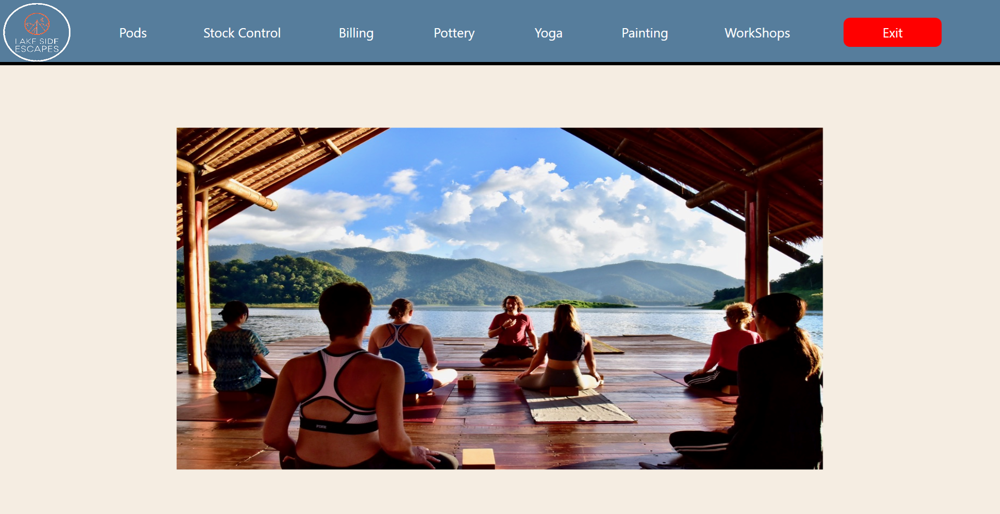

Hi, I'm Fintan McIvor an 18 year old University student currently studying a bachelor degree of Software Engineering at Queen's University of Belfast. Firstly this website is designed to show off my skills as a web developer along with my previous projects with in depth explanation of the development and purpose of these projects. I have also included a game library section on the page which provides a small number of web app games I have developed to show off my skills as a game developer and prove that I have a wide variety of skills in many forms of programming. These games may not have been created as well as their original counter parts, this is a result of me doing it the way i thought of instead of following a guide , or using AI. Although i did use AI to explain and teach me some features of JAVAscript along with how it interacts with html and css.
My previous experience with coding was at school from GCSE through to A-Levels, doing Digital Technology (Programming) at GCSE and Software systems development at A-Level. These subjects taught me the fundamentals and then expanded my knowledge each year in the language of C# and SQL for databases, building complex systems (These can be seen in the projects section). I hope to expand my knowledge of coding languages and techniques outside of University and will be doing freelancing for small independent projects on the app Fivver.These projects i hope help develop skills in a wide variety of software related fields and help me to thrive in my University course.
In my spare time I have a wide variety of hobbies and interests outside of my education along with ones related to my course and chosen field. Gaelic Football is my main hobby having been playing it for over 12 years now starting when i was 5/6. Throughout my time playing i have my up and downs with making different teams and then extended periods with little game time, only to find my feet again during this year's season. Gaelic has always been a centre point in my life with my family being involved too and the perseverance I have seemed to gain from it has standed me well in regards to my programming. It has drasticly helped my debugging skills, helping me to not give up and to continue searching for a solution, in fact it has helped me in so many aspects of life from social right through to academics. Outside of my gaelic i love to spend time with my girlfriend, play online games with my friends on the PS5, play with my dog and code. Yes my passion for coding doesn't just end with my University course... I do code outside of it. Some of these projects outside of my course can be seen in the game library along with links to my github down below to view the desktop apps coded in a variety of languages. If you stop and think for a minute aswell even reading this is part of viewing my coding projects outside of my course. I also have a love for movies and tv shows with Star Wars being a large part of my childhood, especially the lego sets which I have collected for years and still collect to this day. Having spent many late nights watching and rewatching the trilogies and the tv shows I can confidently say im a super fan. I also happen to have sold sweets in school for a year or so having always been interested in business and the idea of my own company. The business was successful until lockdown hit and I never had a chance to start again in the next year as i had to focus on my GCSEs.However this business was succeeded by my Ipone screen, camera and battery repair business which i started in the March of 2022 and still continue to run. As you can see I have a serious interest in learning new schools and owning my own business or delivering some sort of product or service, whether that be physical or online. It probably now comes as no suprise that I set my sights upon building my own name in the software industry after sometime learning and working for a larger business. I hope to be able to do freelance side work along with a main job or if an idea comes along turn it into a product and grow a business form there. I hope this simple web page is only the beginning.